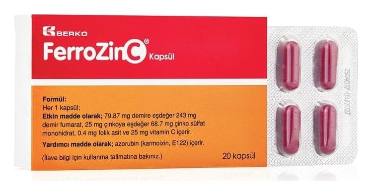

Ferrozinc Kapsül, 20 Adet

Ne için kullanılır
KT · Bölüm 1• FERROZİNC; demir fumarat, çinko sülfat monohidrat, folik asit ve vitamin C içeren ve ağız yolu ile kullanılan bir kapsüldür. • Her kutuda toplam 20 ve 30 kapsül içeren ambalajlarda kullanıma sunulmaktadır. • FERROZİNC, demir eksikliği ile birlikte çinko eksikliği durumlarında kullanılır.